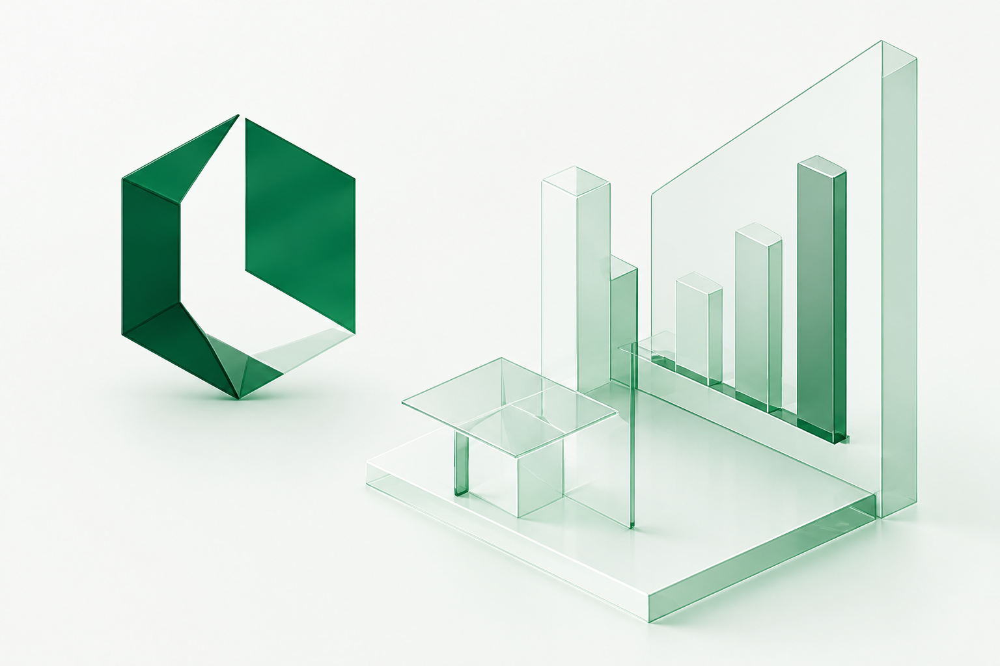
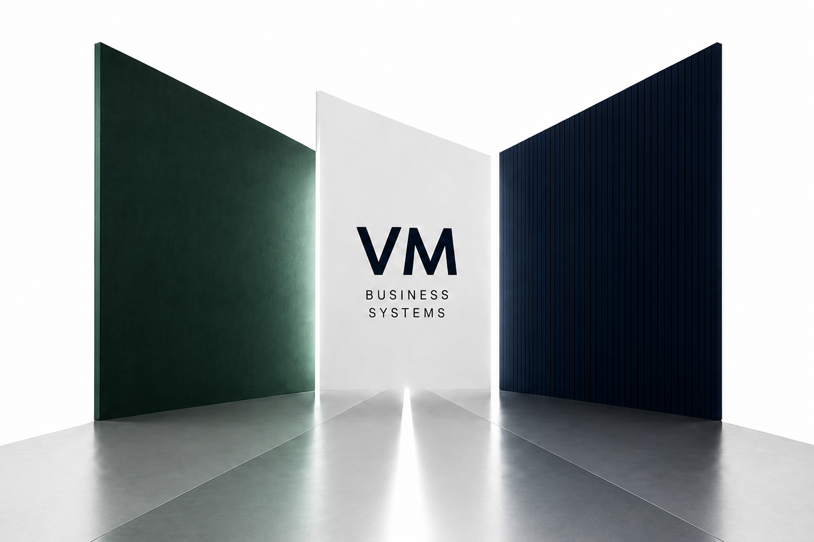
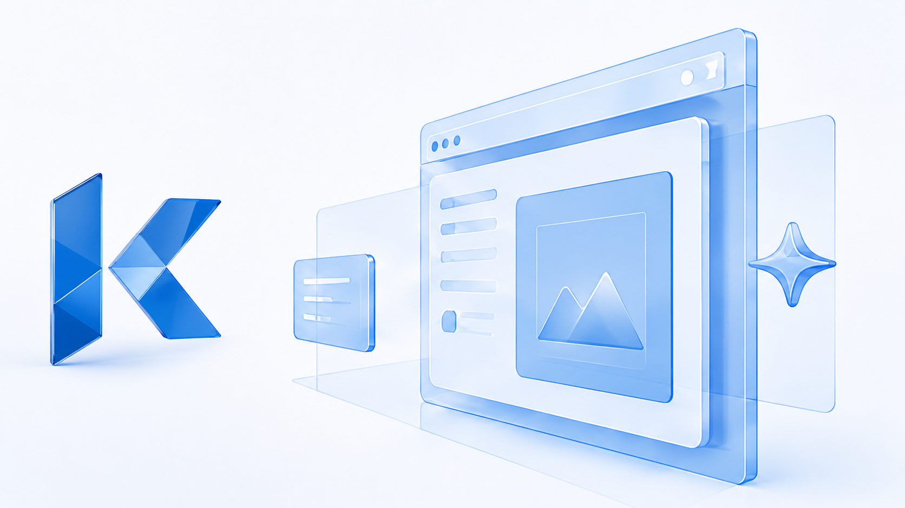
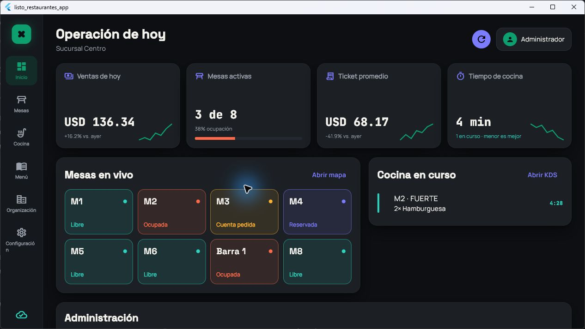

Tecnología especializada.
Productos con identidad propia.
Creamos soluciones digitales independientes para operar negocios, desarrollar nuevas experiencias y construir presencia web.


ListoKDS
Mesas, pedidos, cocina y caja conectados en una sola operación para restaurantes.
Conocer ListoKDS